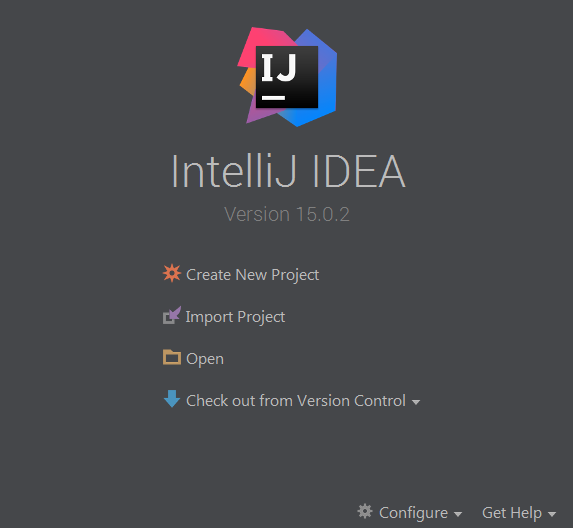
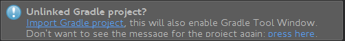

The example CorDapp¶
Note
The example CorDapp was previously hosted in the cordapp-template repository. It has now been moved into a new cordapp-tutorial repository. Going forward, the cordapp-template repo will contain an actual CorDapp template, which should be used as the basis for your CorDapps going forward.
This guide covers how to get started with the example CorDapp. Please note there are several Corda repositories:
- corda which contains the core platform code and sample CorDapps.
- cordapp-tutorial which contains an example CorDapp you can use to bootstrap your own CorDapps. It is the subject of this tutorial and should help you understand the basics of building a CorDapp.
- cordapp-template which contains a bare-bones template on which to build your own CorDapps.
We recommend you read the non-technical white paper and technical white paper before you get started with Corda:
- The Introductory white paper describes the motivating vision and background of the project. It is the kind of document your boss should read. It describes why the project exists and briefly compares it to alternative systems on the market.
- The Technical white paper describes the entire intended design from beginning to end. It is the kind of document that you should read, or at least, read parts of. Note that because the technical white paper describes the intended end state, it does not always align with the implementation.
Background¶
The Example CorDapp implements a basic scenario where one party wishes to send an IOU to another party. The scenario defines four nodes:
- Controller, which hosts the network map service and validating notary service
- NodeA
- NodeB
- NodeC
The nodes can generate IOUs and send them to other nodes. The flows used to facilitate the agreement process always results in
an agreement with the recipient as long as the IOU meets the contract constraints which are defined in IOUContract.kt.
All agreed IOUs between NodeA and NodeB become “shared facts” between NodeA and NodeB. But note that NodeC
won’t see any of these transactions or have copies of any of the resulting IOUState objects. This is
because data is only propagated on a need-to-know basis.
Getting started¶
There are two ways to get started with the example CorDapp. You can either work from a milestone release of Corda or a SNAPSHOT release of Corda.
Using a monthly Corda milestone release. If you wish to develop your CorDapp using the most recent milestone release
then you can get started simply by cloning the cordapp-tutorial repository. Gradle will grab all the required dependencies
for you from our public Maven repository.
Using a Corda SNAPSHOT build. Alternatively, if you wish to work from the master branch of the Corda repo which contains
the most up-to-date Corda feature set then you will need to clone the corda repository and publish the latest master
build (or previously tagged releases) to your local Maven repository. You will then need to ensure that Gradle
grabs the correct dependencies for you from Maven local by changing the corda_version in build.gradle. This will be
covered below in Using a SNAPSHOT release.
Firstly, follow the getting set up page to download the JDK, IntelliJ and git if you didn’t already have it.
Working from milestone releases¶
If you wish to build a CorDapp against a milestone release then please use these instructions.
The process for developing your CorDapp from a milestone release is the most simple way to get started and is the preferred approach.
We publish all our milestone releases to a public Maven repository on a monthly basis. As such, Gradle will automatically
grab the appropriately versioned (specified in the cordapp-tutorial‘s build.gradle file) dependencies for you from Maven.
All you have to do is check out the release tag of the tutorial version you wish to use.
By default, the master branch of the cordapp-tutorial points to a SNAPSHOT release of Corda, this is because it is
being constantly updated to reflect the changes in the master branch of the corda repository.
Note
If you wish to use a SNAPSHOT release then follow the instructions below: Using a SNAPSHOT release.
To clone the cordapp-tutorial repository, use the following command:
git clone https://github.com/corda/cordapp-tutorial
Now change directories to the freshly cloned repo:
cd cordapp-tutorial
To enumerate all the tagged releases. Use:
git tag
To checkout a specific tag, use:
git checkout -b [local_branch_name] tags/[tag_name]
where local_branch_name is a name of your choice and tag_name is the name of the tag you wish to checkout.
Gradle will handle all the dependencies for you. Now you are now ready to get started building the example CorDapp.
Using a SNAPSHOT release¶
If you wish to build a CorDapp against the most current version of Corda, follow these instructions.
The Corda repository comprises the following folders:
- buildSrc contains necessary gradle plugins to build Corda.
- client contains the RPC client framework.
- config contains logging configurations and the default node configuration file.
- core containing the core Corda libraries such as crypto functions, types for Corda’s building blocks: states, contracts, transactions, attachments, etc. and some interfaces for nodes and protocols.
- docs contains the Corda docsite in restructured text format as well as the built docs in html. The docs can be
accessed via
/docs/index.htmlfrom the root of the repo. - finance defines a range of elementary contracts (and associated schemas) and protocols, such as abstract fungible assets, cash, obligation and commercial paper.
- gradle contains the gradle wrapper which you’ll use to execute gradle commands.
- gradle-plugins contains some additional plugins which we use to deploy Corda nodes.
- lib contains some dependencies.
- node contains anything specifically required for creating, running and managing nodes (eg: node driver, servlets, node services, messaging, persistence).
- samples contains all our Corda demos and code samples.
- test-utils contains some utilities for unit testing contracts ( the contracts testing DSL) and protocols (the mock network) implementation.
- tools contains the explorer which is a GUI front-end for Corda.
Firstly navigate to the folder on your machine you wish to clone the Corda repository to. Then use the following command to clone the Corda repository:
git clone https://github.com/corda/corda.git
Now change directories:
cd corda
Once you’ve cloned the corda repository and are in the repo directory you have the option to remain on the master
branch or checkout a specific branch. Use:
git branch --all
to enumerate all the branches. To checkout a specific branch, use:
git checkout -b [local_branch_name] origin/[remote_branch_name]
where local_branch_name is a name of your choice and remote_branch_name is the name of the remote branch you wish
to checkout.
Note
When working with master you will have access to the most up-to-date feature set. However you will be
potentially sacrificing stability. We will endeavour to keep the master branch of the cordapp-tutorial repo in sync
with the master branch of corda repo. A milestone tagged release would be more stable for CorDapp development.
The next step is to publish the Corda JARs to your local Maven repository. By default the Maven local repository can be found:
~/.m2/repositoryon Unix/Mac OS X%HOMEPATH%\.m2on windows.
Publishing can be done with running the following Gradle task from the root project directory:
Unix/Mac OSX: ./gradlew install
Windows: gradlew.bat install
This will install all required modules, along with sources and JavaDocs to your local Maven repository. The version
and groupid of Corda installed to Maven local is specified in the build.gradle file in the root of the corda
repository. You shouldn’t have to change these values unless you want to publish multiple versions of a SNAPSHOT, e.g.
if you are trying out new features, in this case you can change version for each SNAPSHOT you publish.
Note
A quick point on corda version numbers used by Gradle.
In the build.gradle file for your CorDapp, you can specify the corda_version to use. It is important that when
developing your CorDapp that you use the correct version number. For example, when wanting to work from a SNAPSHOT
release, the release numbers are suffixed with ‘SNAPSHOT’, e.g. if the latest milestone release is M6 then the
SNAPSHOT release will be 0.7-SNAPSHOT, and so on. As such, you will set your corda_version to '0.7-SNAPSHOT'
in the build.gradle file in your CorDapp. Gradle will automatically grab the SNAPSHOT dependencies from your local
Maven repository. Alternatively, if working from a milestone release, you will use the version number only, for example
0.6 or 0.7.
Lastly, as the Corda repository evolves on a daily basis up until the next milestone release, it is worth nothing that the substance of two SNAPSHOT releases of the same number may be different. If you are using a SNAPSHOT and need help debugging an error then please tell us the commit you are working from. This will help us ascertain the issue.
As additional feature branches are merged into Corda you can git pull the new changes from the corda repository.
If you are feeling inquisitive, you may also wish to review some of the current feature branches. All new features are
developed on separate branches. To enumerate all the current branches use:
git branch --all
and to check out an open feature branch, use:
git checkout -b [local_branch_name] origin/[branch_name]
Note
Publishing Corda JARs from unmerged feature branches might cause some unexpected behaviour / broken CorDapps. It would also replace any previously published SNAPSHOTS of the same version.
Warning
If you do modify Corda after you have previously published it to Maven local then you must republish your SNAPSHOT build such that Maven reflects the changes you have made.
Once you have published the Corda JARs to your local Maven repository, you are ready to get started building your CorDapp using the latest Corda features.
Opening the example CorDapp with IntelliJ¶
For those familiar with IntelliJ, you can skip this section.
As noted in the getting started guide, we recommend using the IntelliJ IDE. Assuming you have already downloaded and installed IntelliJ, lets now open the example CorDapp with IntelliJ.
For those completely new to IntelliJ
Firstly, load up IntelliJ. A dialogue will appear:
{kind=link}
Click open, then navigate to the folder where you cloned the cordapp-tutorial and click OK.
Next, IntelliJ will show a bunch of pop-up windows. One of which requires our attention:
{kind=link}
Click the ‘import gradle project’ link. A dialogue will pop-up. Press OK. Gradle will now obtain all the project dependencies and perform some indexing. It usually takes a minute or so. If you miss the ‘import gradle project’ dialogue, simply close and re-open IntelliJ again to see it again.
Alternative approach
Alternatively, one can instruct IntelliJ to create a new project through cloning a repository. From the IntelliJ welcome dialogue (shown above), opt to ‘check out from version control’, then select git and enter the git URL for the example CorDapp (https://github.com/corda/cordapp-tutorial). You’ll then need to import the Gradle project when prompted, as explained above.
If you already have IntelliJ open
From the File menu, navigate to Open ... and then navigate to the directory where you cloned the cordapp-tutorial.
Alternatively, if you wish to clone from github directly then navigate to File > New > Project from existing sources ...
and enter the URL to the example CorDapp (specified above). When instructed, be sure to import the Gradle project when prompted.
The Gradle plugin
IntelliJ can be used to run Gradle tasks through the Gradle plugin which can be found via View > Tool windows > Gradle.
All the Gradle projects are listed in the window on the right hand side of the IDE. Click on a project, then ‘tasks’ to
see all available Gradle tasks.
- For the example CorDapp repo there will only be one Gradle project listed.
- For the Corda repo there will be many project listed, the root project
cordaand associated sub-projects:core,finance,node, etc.
Note
It’s worth noting that when you change branch in the example CorDapp, the corda_version will change to
reflect the version of the branch you are working from.
To execute a task, double click it. The output will be shown in a console window.
Building the example CorDapp¶
From the command line
Firstly, return to your terminal window used above and make sure you are in the cordapp-tutorial directory.
To build the example CorDapp use the following command:
Unix/Mac OSX: ./gradlew deployNodes
Windows: gradlew.bat deployNodes
This build process will build the example CorDapp defined in the example CorDapp source. CorDapps can be written in
any language targeting the JVM. In our case, we’ve provided the example source in both Kotlin (/kotlin/src) and
Java (/java/src) Since both sets of source files are functionally identical, we will refer to the Kotlin build
throughout the documentation.
For more information on the example CorDapp see “The Example CorDapp” section below. Gradle will then grab all the dependencies for you and build the example CorDapp.
The deployNodes Gradle task allows you easily create a formation of Corda nodes. In the case of the example CorDapp
we are creating four nodes.
After the building process has finished to see the newly built nodes, you can navigate to the kotlin/build/nodes folder
located in the cordapp-tutorial root directory. You can ignore the other folders in /build for now. The nodes
folder has the following structure:
. nodes
├── controller
│ ├── corda.jar
│ ├── dependencies
│ ├── node.conf
│ └── plugins
├── nodea
│ ├── corda.jar
│ ├── dependencies
│ ├── node.conf
│ └── plugins
├── nodeb
│ ├── corda.jar
│ ├── dependencies
│ ├── node.conf
│ └── plugins
├── nodec
│ ├── corda.jar
│ ├── dependencies
│ ├── node.conf
│ └── plugins
├── runnodes
└── runnodes.bat
There will be one folder generated for each node you build (more on later when we get into the detail of the
deployNodes Gradle task) and a runnodes shell script (batch file on Windows).
Each node folder contains the Corda JAR, a folder for dependencies and a folder for plugins (or CorDapps). There is also a node.conf file. See Corda configuration files.
Building from IntelliJ
Open the Gradle window by selecting View > Tool windows > Gradle from the main menu. You will see the Gradle window
open on the right hand side of the IDE. Expand tasks and then expand other. Double click on deployNodes. Gradle will
start the build process and output progress to a console window in the IDE.
Running the example CorDapp¶
Running the example CorDapp from the command line¶
To run the sample CorDapp navigate to the kotlin/build/nodes folder and execute the runnodes shell script with:
Unix: ./runnodes or sh runnodes
Windows: runnodes.bat
The runnodes scripts should create a terminal tab for each node. In each terminal tab, you’ll see the Corda welcome
message and some pertinent config information, see below:
______ __
/ ____/ _________/ /___ _
/ / __ / ___/ __ / __ `/ Computer science and finance together.
/ /___ /_/ / / / /_/ / /_/ / You should see our crazy Christmas parties!
\____/ /_/ \__,_/\__,_/
--- DEVELOPER SNAPSHOT ------------------------------------------------------------
Logs can be found in : /Users/rogerwillis/Documents/Corda/cordapp-tutorial/kotlin/build/nodes/nodea/logs
Database connection URL is : jdbc:h2:tcp://10.18.0.196:50661/node
Node listening on address : localhost:10004
Loaded plugins : com.example.plugin.ExamplePlugin
Embedded web server is listening on : http://10.18.0.196:10005/
Node started up and registered in 39.0 sec
You’ll need to refer to the above later on for the JDBC connection string and port numbers.
Depending on the speed of your machine, it usually takes around 30 seconds for the nodes to finish starting up. If you
want to double check all the nodes are running you can query the ‘status’ end-point located at
http://host:post/api/status.
When booted up, the node will generate a bunch of files and directories in addition to the ones covered above:
.
├── artemis
├── attachments
├── cache
├── certificates
├── corda.jar
├── dependencies
├── identity-private-key
├── identity-public
├── logs
├── node.conf
├── persistence.mv.db
└── plugins
Notably:
- artemis contains the internal files for Artemis MQ, our message broker.
- attachments contains any persisted attachments.
- certificates contains the certificate store.
- identity-private-key is the node’s private key.
- identity-public is the node’s public key.
- logs contains the node’s log files.
- persistence.mv.db is the h2 database where transactions and other data is persisted.
Additional files and folders are added as the node is running.
Running the example CorDapp via IntelliJ¶
To run the example CorDapp via IntelliJ you can use the Run Example CorDapp run configuration. Select it from the drop
down menu at the top right-hand side of the IDE and press the green arrow to start the nodes. See image below:
{kind=link}
The node driver defined in /src/main/kotlin/com/example/Main.kt allows you to specify how many nodes you would like
to run and the various configuration settings for each node. With the example CorDapp, the Node driver starts four nodes
and sets up an RPC user for all but the “Controller” node (which hosts the notary Service and network map service):
fun main(args: Array<String>) {
// No permissions required as we are not invoking flows.
val user = User("user1", "test", permissions = setOf())
driver(dsl = {
startNode("Controller", setOf(ServiceInfo(ValidatingNotaryService.type)))
startNode("NodeA", rpcUsers = listOf(user))
startNode("NodeB", rpcUsers = listOf(user))
startNode("NodeC", rpcUsers = listOf(user))
waitForAllNodesToFinish()
}, isDebug = true)
}
To stop the nodes, press the red “stop” button at the top right-hand side of the IDE.
The node driver can also be used to as a basis for debugging your CorDapp
Interacting with the example CorDapp¶
Via HTTP¶
The CorDapp defines a few HTTP API end-points and also serves some static web content. The end-points allow you to list IOUs and add IOUs.
The nodes can be found using the following port numbers, defined in build.gradle and the respective node.conf file for each node found in kotlin/build/nodes/NodeX` etc:
- Controller:
localhost:10003 - NodeA:
localhost:10005 - NodeB:
localhost:10007 - NodeC:
localhost:10009
Note that the deployNodes Gradle task is used to generate the node.conf files for each node.
As the nodes start-up they should tell you which host and port the embedded web server is running on. The API endpoints served are as follows:
/api/example/me/api/example/peers/api/example/ious/api/example/{COUNTERPARTY}/create-iou
The static web content is served from /web/example.
An IOU can be created via accessing the api/example/create-iou end-point directly or through the
the web form hosted at /web/example.
Warning
The content in ``web/example`` is only available for demonstration purposes and does not implement any anti-XSS, anti-XSRF or any other security techniques. Do not copy such code directly into products meant for production use.
Submitting an IOU via HTTP API:
To create an IOU from NodeA to NodeB, use:
echo '{"value": "1"}' | cURL -T - -H 'Content-Type: application/json' http://localhost:10005/api/example/NodeB/create-iou
Note the port number 10005 (NodeA) and NodeB referenced in the API end-point path. This command instructs NodeA to
create and send an IOU to NodeB. Upon verification and completion of the process, both nodes (but not NodeC) will
have a signed, notarised copy of the IOU.
Submitting an IOU via web/example:
Navigate to the “create IOU” button at the top left of the page, and enter the IOU details - e.g.
Counter-party: Select from list
Order Number: 1
Delivery Date: 2018-09-15
City: London
Country Code: UK
Item name: Wow such item
Item amount: 5
and click submit (note you can add additional item types and amounts). Upon pressing submit, the modal dialogue should close.
To check what validation is performed over the IOU data, have a look at the IOUContract.Create class in
IOUContract.kt which defines the following contract constraints (among others not included here):
// Generic constraints around the IOU transaction.
"No inputs should be consumed when issuing an IOU." by (tx.inputs.isEmpty())
"Only one output state should be created." by (tx.outputs.size == 1)
val out = tx.outputs.single() as IOUState
"The sender and the recipient cannot be the same entity." by (out.sender != out.recipient)
"All of the participants must be signers." by (command.signers.containsAll(out.participants))
// IOU-specific constraints.
"The IOU's value must be non-negative." by (out.iou.value > 0)
Once an IOU has been submitted:
Inspect the terminal windows for the nodes. Assume all of the above contract constraints are met, you should see some activity in the terminal windows for NodeA and NodeB (note: the green ticks are only visible on unix/mac):
NodeA:
✅ Generating transaction based on new IOU. ✅ Verifying contract constraints. ✅ Signing transaction with our private key. ✅ Sending proposed transaction to recipient for review. ✅ Done
NodeB:
✅ Receiving proposed transaction from sender. ✅ Verifying signatures and contract constraints. ✅ Signing proposed transaction with our private key. ✅ Obtaining notary signature and recording transaction.
- ✅ Requesting signature by notary service
- ✅ Requesting signature by Notary service ✅ Validating response from Notary service
✅ Broadcasting transaction to participants
✅ Done
NodeC:
You shouldn't see any activity.
Next you can view the newly created IOU by accessing the vault of NodeA or NodeB:
Via the HTTP API:
For NodeA. navigate to http://localhost:10005/api/example/ious. For NodeB, navigate to http://localhost:10007/api/example/ious.
Via web/example:
Navigate to http://localhost:10005/web/example the refresh button in the top left-hand side of the page. You should see the newly created agreement on the page.
Using the h2 web console¶
You can connect to the h2 database to see the current state of the ledger, among other data such as the current state of the network map cache. Firstly, navigate to the folder where you downloaded the h2 web console as part of the pre-requisites section, above. Change directories to the bin folder:
cd h2/bin
Where there are a bunch of shell scripts and batch files. Run the web console:
Unix:
sh h2.sh
Windows:
h2.bat
The h2 web console should start up in a web browser tab. To connect we first need to obtain a JDBC connection string. Each node outputs its connection string in the terminal window as it starts up. In a terminal window where a node is running, look for the following string:
Database connection URL is : jdbc:h2:tcp://10.18.0.150:56736/node
you can use the string on the right to connect to the h2 database: just paste it in to the JDBC URL field and click Connect. You will be presented with a web application that enumerates all the available tables and provides an interface for you to query them using SQL.
Using the Example RPC client¶
The /src/main/kotlin/com/example/client/ExampleClientRPC.kt file is a simple utility which uses the client RPC library
to connect to a node and log the created IOUs. It will log any existing IOUs and listen for any future
IOUs. If you haven’t created any IOUs when you connect to one of the Nodes via RPC then the client will log
and future IOUs which are agreed.
To build the client use the following gradle task:
./gradlew runExampleClientRPC
To run the client, via IntelliJ:
Select the ‘Run Example RPC Client’ run configuration which, by default, connects to NodeA (Artemis port 10004). Click the Green Arrow to run the client. You can edit the run configuration to connect on a different port.
Via command line:
Run the following gradle task:
./gradlew runExampleClientRPC localhost:10004
To close the application use ctrl+C. For more information on the client RPC interface and how to build an RPC client
application see:
Extending the example CorDapp¶
cordapp-tutorial project structure¶
The example CorDapp has the following directory structure:
. cordapp-tutorial
├── README.md
├── LICENSE
├── build.gradle
├── config
│ ├── ...
├── gradle
│ └── ...
├── gradle.properties
├── gradlew
├── gradlew.bat
├── lib
│ ├── ...
├── settings.gradle
├── kotlin-source
│ └── src
│ ├── main
│ │ ├── kotlin
│ │ │ └── com
│ │ │ └── example
│ │ │ ├── Main.kt
│ │ │ ├── api
│ │ │ │ └── ExampleApi.kt
│ │ │ ├── client
│ │ │ │ └── ExampleClientRPC.kt
│ │ │ ├── contract
│ │ │ │ ├── IOUContract.kt
│ │ │ │ └── IOUState.kt
│ │ │ ├── model
│ │ │ │ └── IOU.kt
│ │ │ ├── plugin
│ │ │ │ └── ExamplePlugin.kt
│ │ │ └── flow
│ │ │ └── ExampleFlow.kt
│ │ │ └── service
│ │ │ └── ExampleService.kt
│ │ ├── python
│ │ └── resources
│ │ ├── META-INF
│ │ │ └── services
│ │ │ └── net.corda.core.node.CordaPluginRegistry
│ │ ├── certificates
│ │ │ ├── readme.txt
│ │ │ ├── sslkeystore.jks
│ │ │ └── truststore.jks
│ │ └── exampleWeb
│ │ ├── index.html
│ │ └── js
│ │ └── example.js
│ └── test
│ ├── java
│ ├── kotlin
│ │ └── com
│ │ └── example
│ │ └── ExampleTest.kt
│ └── resources
└── java-source
└── src
├── main
│ ├── java
│ │ └── com
│ │ └── example
│ │ ├── Main.java
│ │ ├── api
│ │ │ └── ExampleApi.java
│ │ ├── client
│ │ │ └── ExampleClientRPC.java
│ │ ├── contract
│ │ │ ├── IOUContract.java
│ │ │ └── IOUState.java
│ │ ├── model
│ │ │ └── IOU.java
│ │ ├── plugin
│ │ │ └── ExamplePlugin.java
│ │ └── flow
│ │ └── ExampleFlow.java
│ │ └── service
│ │ └── ExampleService.java
│ ├── python
│ └── resources
│ ├── META-INF
│ │ └── services
│ │ └── net.corda.core.node.CordaPluginRegistry
│ ├── certificates
│ │ ├── readme.txt
│ │ ├── sslkeystore.jks
│ │ └── truststore.jks
│ └── exampleWeb
│ ├── index.html
│ └── js
│ └── example.js
└── test
├── java
├── kotlin
│ └── com
│ └── example
│ └── ExampleTest.kt
└── resources
In the file structure above, the most important files and directories to note are:
- The root directory contains some gradle files, a README and a LICENSE.
- config contains log4j configs.
- gradle contains the gradle wrapper, which allows the use of Gradle without installing it yourself and worrying about which version is required.
- lib contains the Quasar.jar which is required for runtime instrumentation of classes by Quasar.
- kotlin contains the source code for the example CorDapp written in Kotlin.
- kotlin/src/main/kotlin contains the source code for the example CorDapp.
- kotlin/src/main/python contains a python script which accesses nodes via RPC.
- kotlin/src/main/resources contains the certificate store, some static web content to be served by the nodes and the PluginServiceRegistry file.
- kotlin/src/test/kotlin contains unit tests for protocols, contracts, etc.
- java contains the same source code, but written in java. This is an aid for users who do not want to develop in Kotlin, and serves as an example of how CorDapps can be developed in any language targeting the JVM.
Some elements are covered in more detail below.
The build.gradle file¶
It is usually necessary to make a couple of changes to the build.gradle file. Here will cover the most pertinent bits.
The buildscript
The buildscript is always located at the top of the file. It determines which plugins, task classes, and other classes are available for use in the rest of the build script. It also specifies version numbers for dependencies, among other things.
If you are working from a Corda SNAPSHOT release which you have publish to Maven local then ensure that
corda_version is the same as the version of the Corda core modules you published to Maven local. If not then change the
kotlin_version property. Also, if you are working from a previous cordapp-tutorial milestone release, then be sure to git checkout
the correct version of the example CorDapp from the cordapp-tutorial repo.
buildscript {
ext.kotlin_version = '1.0.4'
ext.corda_version = '0.5-SNAPSHOT' // Ensure this version is the same as the corda core modules you are using.
ext.quasar_version = '0.7.6'
ext.jersey_version = '2.23.1'
repositories {
...
}
dependencies {
...
}
}
Project dependencies
If you have any additional external dependencies for your CorDapp then add them below the comment at the end of this code snippet.package. Use the standard format:
compile "{groupId}:{artifactId}:{versionNumber}"
dependencies {
compile "org.jetbrains.kotlin:kotlin-stdlib:$kotlin_version"
testCompile group: 'junit', name: 'junit', version: '4.11'
// Corda integration dependencies
compile "net.corda:client:$corda_version"
compile "net.corda:core:$corda_version"
compile "net.corda:contracts:$corda_version"
compile "net.corda:node:$corda_version"
compile "net.corda:corda:$corda_version"
compile "net.corda:test-utils:$corda_version"
...
// Cordapp dependencies
// Specify your cordapp's dependencies below, including dependent cordapps
}
For further information about managing dependencies with look at the Gradle docs.
CordFormation
This is the local node deployment system for CorDapps, the nodes generated are intended to be used for experimenting, debugging, and testing node configurations but not intended for production or testnet deployment.
In the CorDapp build.gradle file you’ll find a deployNodes task, this is where you configure the nodes you would
like to deploy for testing. See further details below:
task deployNodes(type: com.r3corda.plugins.Cordform, dependsOn: ['build']) {
directory "./kotlin/build/nodes" // The output directory.
networkMap "Controller" // The artemis address of the node to be used as the network map.
node {
name "Controller" // Artemis name of node to be deployed.
nearestCity "London" // For use with the network visualiser.
advertisedServices = ["corda.notary.validating"] // A list of services you wish the node to offer.
artemisPort 10002
webPort 10003 // Usually 1 higher than the Artemis port.
cordapps = [] // Add package names of CordaApps.
}
node { // Create an additional node.
name "NodeA"
nearestCity "London"
advertisedServices = []
artemisPort 10004
webPort 10005
cordapps = []
}
...
}
You can add any number of nodes, with any number of services / CorDapps by editing the templates in deployNodes. The
only requirement is that you must specify a node to run as the network map service and one as the notary service.
Note
CorDapps in the current cordapp-tutorial project are automatically registered with all nodes defined in
deployNodes, although we expect this to change in the near future.
Warning
Make sure that there are no port clashes!
When you are finished editing your CordFormation the changes will be reflected the next time you run ./gradlew deployNodes.
Service Provider Configuration File¶
If you are building a CorDapp from scratch or adding a new CorDapp to the cordapp-tutorial project then you must provide
a reference to your sub-class of CordaPluginRegistry in the provider-configuration file in located in the resources/META-INF/services directory.
Re-Deploying Your Nodes Locally¶
If you need to create any additional nodes you can do it via the build.gradle file as discussed above in
the build.gradle file and in more detail in the “cordFormation” section.
You may also wish to edit the /kotlin/build/nodes/<node name>/node.conf files for your nodes. For more information on
doing this, see the Corda configuration file page.
Once you have made some changes to your CorDapp you can redeploy it with the following command:
Unix/Mac OSX: ./gradlew deployNodes
Windows: gradlew.bat deployNodes
Running Nodes Across Machines¶
The nodes can also be set up to communicate between separate machines on the same subnet.
After deploying the nodes, navigate to the build folder (kotlin/build/ nodes or java/build/nodes) and move some of the individual node folders to separate machines on the same subnet (e.g. using a USB key). It is important that no nodes - including the controller node - end up on more than one machine. Each computer should also have a copy of runnodes and runnodes.bat.
For example, you may end up with the following layout:
- Machine 1: controller, nodea, runnodes, runnodes.bat
- Machine 2: nodeb, nodec, runnodes, runnodes.bat
You must now edit the configuration file for each node, including the controller. Open each node’s config file ([nodeName]/node.conf), and make the following changes:
- Change the artemis address to the machine’s ip address (e.g.
artemisAddress=”10.18.0.166:10006”) * Change the network map service details to the ip address of the machine where the controller node is running and to its legal name (e.g. networkMapService.address=”10.18.0.166:10002” and networkMapService.legalName=controller) (please note that the controller will not have the networkMapService config)
Each machine should now run its nodes using runnodes or runnodes.bat files. Once they are up and running, the nodes should be able to create IOUs among themselves in the same way as when they were running on the same machine.
Debugging your CorDapp¶
Debugging is done via IntelliJ and can be done using the following steps.
- Set your breakpoints.
- Edit the node driver code in
Main.ktto reflect how many nodes you wish to start along with any other configuration options. For example, the below starts 4 nodes, with one being the network map service / notary and sets up RPC credentials for 3 of the nodes.
fun main(args: Array<String>) {
// No permissions required as we are not invoking flows.
val user = User("user1", "test", permissions = setOf())
driver(dsl = {
startNode("Controller", setOf(ServiceInfo(ValidatingNotaryService.type)))
startNode("NodeA", rpcUsers = listOf(user))
startNode("NodeB", rpcUsers = listOf(user))
startNode("NodeC", rpcUsers = listOf(user))
waitForAllNodesToFinish()
}, isDebug = true)
}
- Select and run the “Run Example CorDapp” run configuration in IntelliJ.
- IntelliJ will build and run the CorDapp. Observe the console output for the remote debug ports. The “Controller” node will generally be on port 5005, with NodeA on port 5006 an so-on.
Listening for transport dt_socket at address: 5008
Listening for transport dt_socket at address: 5007
Listening for transport dt_socket at address: 5006
- Edit the “Debug CorDapp” run configuration with the port of the node you wish to connect to.
- Run the “Debug CorDapp” run configuration.